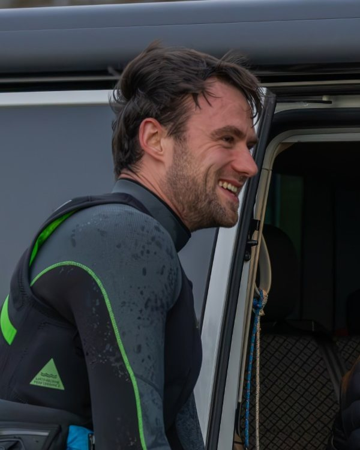

Über michAbout
Winny Hohensee, B.Eng.
Schiffbauingenieur aus Kiel. Ich lege strömungsführende Bauteile aus und optimiere sie, von Rumpf- und Anhangsformen über Propeller bis zu leichten Faserverbundstrukturen.
Naval architect based in Kiel. I design and optimise flow-critical components, from hull and appendage shapes to propellers and lightweight composite structures.

ProfilProfile
Ich habe Schiffbau und Maritime Technik an der Fachhochschule Kiel studiert (B.Eng.) und vertiefe das Fach dort derzeit im Master. Parallel arbeite ich als Werkstudent bei DNV im Bereich Maritime Advisory.
I studied naval architecture and maritime technology at Kiel University of Applied Sciences (B.Eng.), where I am now pursuing my master’s degree. Alongside, I work as a student employee in DNV’s Maritime Advisory.
Beim Odonata e.V. habe ich die Baugruppe Propeller geleitet. Für das Muskelkraftflugzeug Libelle haben wir einen Propeller mit 3,5 m Durchmesser und unter 800 g aerodynamisch optimiert und in einer neuen Monocoque-Bauweise gebaut.
At Odonata e.V. I led the propeller group. For the human-powered aircraft Libelle we aerodynamically optimised a propeller with a 3.5 m diameter and less than 800 g, and built it in a new monocoque construction.
Neben der Berechnung bringe ich praktische Erfahrung aus dem Faserverbundbau im Yachtbau und aus dem Yachtentwurf mit.
Alongside analysis, I bring hands-on experience from composite work in yacht building and from yacht design.
Auszug aus dem WerdegangSelected experience
- seit 06/2025since 06/2025
- DNV · Maritime Advisory
WerkstudentStudent employee - 2024 – 2026
- Odonata e.V. · Human Powered Aircraft
Leitung Baugruppe PropellerHead of propeller group - 2023
- Van Oossanen Naval Architects
Bachelorarbeit: Konzeptentwurf einer 9,5-m-Segelyacht mit hydrodynamischer OptimierungBachelor thesis: concept design of a 9.5 m sailing yacht with hydrodynamic optimisation - 2021 – 2023
- Nübold Yachtbau
Werkstudent im FaserverbundbauStudent employee, composite construction - StudiumEducation
- Fachhochschule Kiel
B.Eng. Schiffbau und Maritime Technik, M.Eng. laufendB.Eng. Naval Architecture and Maritime Technology, M.Eng. ongoing